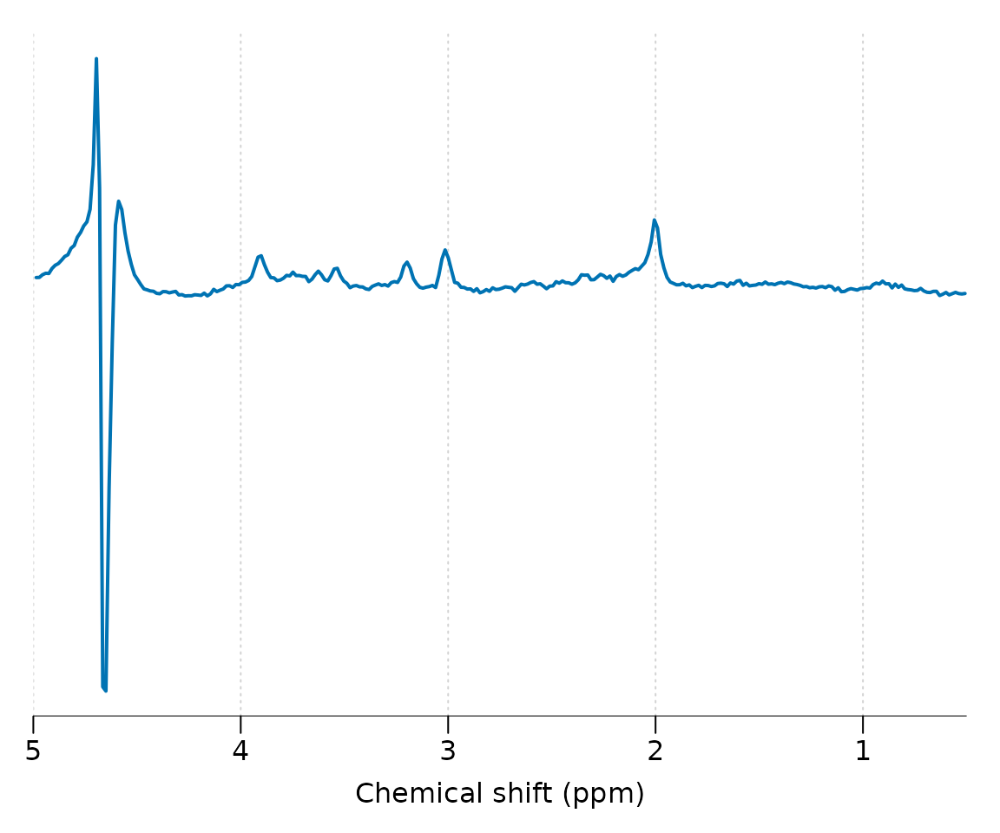
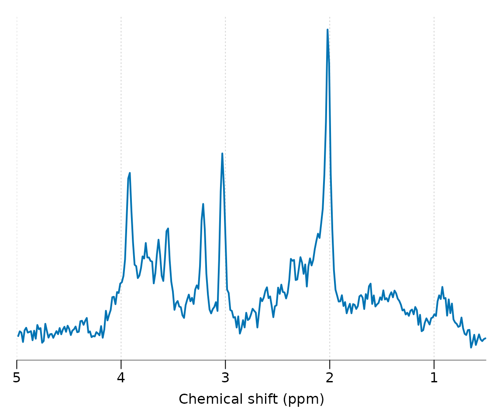
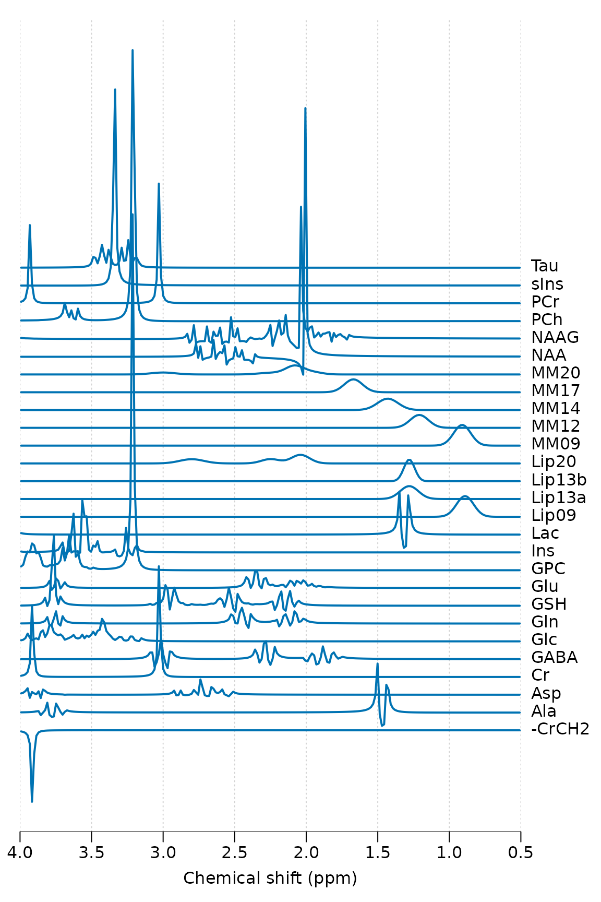
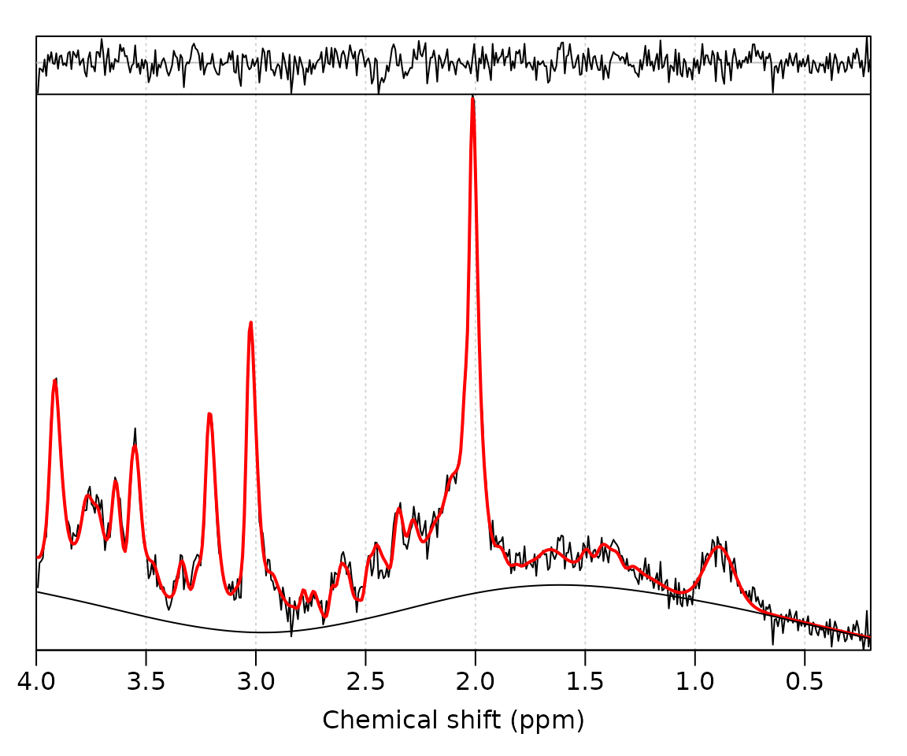

Load the spant package:
Get the path to a data file included with spant:
fname <- system.file("extdata", "philips_spar_sdat_WS.SDAT", package = "spant")Read the file and save to the workspace as mrs_data:
mrs_data <- read_mrs(fname)Output some basic information about the data:
print(mrs_data)
#> MRS Data Parameters
#> ----------------------------------
#> Trans. freq (MHz) : 127.7861
#> FID data points : 1024
#> X,Y,Z dimensions : 1x1x1
#> Dynamics : 1
#> Coils : 1
#> Voxel resolution (mm) : 20x20x20
#> Sampling frequency (Hz) : 2000
#> Repetition time (s) : 2
#> Reference freq. (ppm) : 4.65
#> Nucleus : 1H
#> Spectral domain : FALSE
#> Number of transients : 128
#> Echo time (s) : 0.03
#> Manufacturer : PhilipsPlot the spectral region between 5 and 0.5 ppm:

Apply a HSVD filter to the residual water region and align the spectrum to the tNAA resonance at 2.01 ppm:

Simulate a typical basis set for short TE brain analysis, print some basic information and plot:
basis <- sim_basis_1h_brain_press(mrs_proc)
print(basis)
#> Basis set parameters
#> -------------------------------
#> Trans. freq (MHz) : 127.8
#> Data points : 1024
#> Sampling frequency (Hz) : 2000
#> Elements : 27
#>
#> Names
#> -------------------------------
#> -CrCH2,Ala,Asp,Cr,GABA,Glc,Gln,
#> GSH,Glu,GPC,Ins,Lac,Lip09,
#> Lip13a,Lip13b,Lip20,MM09,MM12,
#> MM14,MM17,MM20,NAA,NAAG,PCh,
#> PCr,sIns,Tau
stackplot(basis, xlim = c(4, 0.5), labels = basis$names, y_offset = 5)
Perform ABfit analysis of the processed data
(mrs_proc):
fit_res <- fit_mrs(mrs_proc, basis)Plot the fit result:
plot(fit_res)
Unscaled amplitudes, CRLB error estimates and other useful fitting
diagnostics, such as SNR, are given in the fit_res results
table:
fit_res$res_tab
#> X Y Z Dynamic Coil X.CrCH2 Ala Asp Cr
#> 1 1 1 1 1 1 0 9.363281e-06 3.329355e-05 4.021879e-05
#> GABA Glc Gln GSH Glu GPC
#> 1 1.691012e-05 4.038111e-06 4.651521e-06 2.169001e-05 6.727174e-05 1.610893e-05
#> Ins Lac Lip09 Lip13a Lip13b Lip20 MM09
#> 1 6.027675e-05 5.931731e-06 2.340751e-05 2.821653e-06 0 0 1.008712e-05
#> MM12 MM14 MM17 MM20 NAA NAAG
#> 1 6.846163e-06 2.708341e-05 2.58065e-05 9.459221e-05 5.952939e-05 1.585881e-05
#> PCh PCr sIns Tau tNAA tCr tCho
#> 1 0 2.051219e-05 6.621263e-06 0 7.53882e-05 6.073099e-05 1.610893e-05
#> Glx tLM09 tLM13 tLM20 X.CrCH2.sd Ala.sd
#> 1 7.192326e-05 3.349463e-05 3.675122e-05 9.459221e-05 2.364498e-06 4.359536e-06
#> Asp.sd Cr.sd GABA.sd Glc.sd Gln.sd GSH.sd
#> 1 8.966702e-06 3.74564e-06 4.456287e-06 4.324841e-06 4.893194e-06 2.018255e-06
#> Glu.sd GPC.sd Ins.sd Lac.sd Lip09.sd Lip13a.sd
#> 1 4.906394e-06 2.467177e-06 2.021897e-06 5.352922e-06 4.069749e-06 1.340768e-05
#> Lip13b.sd Lip20.sd MM09.sd MM12.sd MM14.sd MM17.sd
#> 1 6.513462e-06 7.382294e-06 3.769465e-06 4.494847e-06 7.120125e-06 3.582117e-06
#> MM20.sd NAA.sd NAAG.sd PCh.sd PCr.sd sIns.sd
#> 1 8.258683e-06 1.019012e-06 1.242432e-06 2.110547e-06 3.161709e-06 7.093101e-07
#> Tau.sd tNAA.sd tCr.sd tCho.sd Glx.sd tLM09.sd
#> 1 3.718434e-06 7.082527e-07 5.852186e-07 2.122581e-07 2.893515e-06 9.739824e-07
#> tLM13.sd tLM20.sd phase lw shift asym
#> 1 1.526204e-06 2.88268e-06 10.73644 5.025063 -0.003467598 0.1750151
#> res.deviance res.niter res.info
#> 1 7.467859e-05 27 2
#> res.message bl_ed_pppm
#> 1 Relative error between `par' and the solution is at most `ptol'. 1.969325
#> max_bl_flex_used full_res spec_resid fit_pts ppm_range SNR
#> 1 FALSE 8.218014e-05 7.467859e-05 497 3.8 63.12466
#> SRR FQN tNAA_lw tCr_lw tCho_lw auto_bl_crit_7
#> 1 51.12925 1.524261 0.04575392 0.05173419 0.05458899 -8.893571
#> auto_bl_crit_5.901 auto_bl_crit_4.942 auto_bl_crit_4.12 auto_bl_crit_3.425
#> 1 -8.937072 -8.970754 -8.994897 -9.010328
#> auto_bl_crit_2.844 auto_bl_crit_2.364 auto_bl_crit_1.969 auto_bl_crit_1.647
#> 1 -9.020316 -9.026533 -9.028065 -9.015726
#> auto_bl_crit_1.384 auto_bl_crit_1.17 auto_bl_crit_0.997 auto_bl_crit_0.856
#> 1 -8.964141 -8.847346 -8.69064 -8.560648
#> auto_bl_crit_0.743 auto_bl_crit_0.654 auto_bl_crit_0.593 auto_bl_crit_0.558
#> 1 -8.482969 -8.444754 -8.427997 -8.421008
#> auto_bl_crit_0.54 auto_bl_crit_0.532 auto_bl_crit_0.529
#> 1 -8.418107 -8.41689 -8.416377Note that signal names appended with “.sd” are the CRLB estimates for the uncertainty (standard deviation) in the metabolite quantity estimate. e.g. to calculate the percentage s.d. for tNAA:
fit_res$res_tab$tNAA.sd / fit_res$res_tab$tNAA * 100
#> [1] 0.9394742Spectral SNR:
fit_res$res_tab$SNR
#> [1] 63.12466Linewidth of the tNAA resonance in PPM:
fit_res$res_tab$tNAA_lw
#> [1] 0.04575392Amplitude estimates measured by the fitting method are essentially arbitrary unless scaled to a known reference signal. The simplest approach for proton-MRS is to simply divide all metabolite values by total-creatine:
fit_res_tcr_sc <- scale_amp_ratio(fit_res, "tCr")
amps <- fit_amps(fit_res_tcr_sc)
print(t(amps))
#> [,1]
#> X.CrCH2 0.00000000
#> Ala 0.15417634
#> Asp 0.54821356
#> Cr 0.66224502
#> GABA 0.27844311
#> Glc 0.06649177
#> Gln 0.07659222
#> GSH 0.35714896
#> Glu 1.10770038
#> GPC 0.26525061
#> Ins 0.99252059
#> Lac 0.09767224
#> Lip09 0.38542939
#> Lip13a 0.04646151
#> Lip13b 0.00000000
#> Lip20 0.00000000
#> MM09 0.16609513
#> MM12 0.11272932
#> MM14 0.44595697
#> MM17 0.42493138
#> MM20 1.55756086
#> NAA 0.98021440
#> NAAG 0.26113210
#> PCh 0.00000000
#> PCr 0.33775498
#> sIns 0.10902611
#> Tau 0.00000000
#> tNAA 1.24134651
#> tCr 1.00000000
#> tCho 0.26525061
#> Glx 1.18429260
#> tLM09 0.55152453
#> tLM13 0.60514780
#> tLM20 1.55756086A more sophisticated approach to scaling metabolite values involves the use of a separate water-reference acquisition - which can be imported in the standard way:
fname_wref <- system.file("extdata", "philips_spar_sdat_W.SDAT", package = "spant")
mrs_data_wref <- read_mrs(fname_wref)The following code assumes the voxel contains 100% white matter tissue and scales the metabolite values into molal (mM) units (mol / kg tissue water) based on the method described by Gasparovic et al MRM 2006 55(6):1219-26:
p_vols <- c(WM = 100, GM = 0, CSF = 0)
TE = 0.03
TR = 2
fit_res_molal <- scale_amp_molal_pvc(fit_res, mrs_data_wref, p_vols, TE, TR)
fit_res_molal$res_tab$tNAA
#> [1] 13.91832An alternative method scales the metabolite values into molar (mM) units (mol / Litre of tissue) based on assumptions outlined in the LCModel manual and references therein (section 10.2). This approach may be preferred when comparing results to those obtained LCModel or TARQUIN.
fit_res_molar <- scale_amp_molar(fit_res, mrs_data_wref)
#> Warning in scale_amp_molar(fit_res, mrs_data_wref): Function name
#> (scale_amp_molar) is missleading and has been replaced with scale_amp_legacy.
fit_res_molar$res_tab$tNAA
#> [1] 6.818358Note, while “absolute” units are attractive, a large number of assumptions about metabolite and water relaxation rates are necessary to arrive at these mM estimates. If you’re not confident at being able to justify these assumptions, scaling to a metabolite reference (eg tCr as above) is going to be a better option in most cases. Simple metabolite referenced ratios also have the benefit of being more reproducible due to the simplicity of the approach.